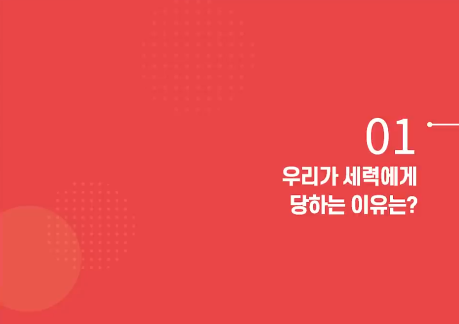

전략연구
우리가 세력에게 당하는 이유는?

이전
▶
다음
1
1 / 총이미지수
[세력분석으로 단기투자에 성공한 종목왕]
<!-- [세력분석으로 단기투자에 성공한 종목왕](https://www.youtube.com/watch?v=2mNHJJkfpUY) --> # 01. 우리가 세력에게 당하는 이유는? 세력이 막대한 자금을 가지고 주가를 좌지우지하기 때문 세력은 능동적으로 개인은 수동적으로 우리도 세력을 잘 활용하면 돈 벌수 있는 기회는 많다. ## 1. 차트는 세력이 돈을 갖고 그리는 그림이다. 너무 다양해서 예측이 불가능 하다 ### 바로급등 - 개인투자자를 유혹하기 위하여.. ### 고가놀이 후 급등 - 종가 이상으로 주가를 관리하느냐가 중요! - 전반적으로 종가 위로 유지하려고 애를 쓰는구나 - 고가놀이를 발견한다면 좋은 기회다 ### 가격조정(0~50% 이상) : 심리선이탈, 공포분위기 조성 - 세력은 바로 급등시키거나 고가놀이 후 급등시키거나 한다 - 하지만, 개미들을 털기위해 가격조정을 한다. - 바로급등, 고가놀이 보다는 가격조정을 해서 심리선을 이탈시키고 공포분위기를 조성한다 - 이평선을 깨고 하락, 추세선을 깨고 하락, 바닥을 깨고 하락 ### 기간조정(1주일~1년이상) : 조급증 유발 - 개인투자자로 하여금 조급증을 유발한다 - 개인들은 가격을 끌고 하락시키는 것을 부정.... - 내가 사면 떨어지고, 내가 팔면 오른다 - 길게는 1년이상, 50%이상 하락 하는 경우도 있다 - 내가 사면 날아갈 것이라는 생각은 금물! <br/> [[TOP]](#index) --- ## 2. 내 눈과 내 손은 나의 것인가? - 내 눈과 내 손은 나의 눈과 나의 손이 아니다. 세력의 눈과 손이다! ### 더 올라갈 것 같이 하여 사게 만든다 - 내 눈과 내 손은 세력의 눈과 손 - 우리는 세력의 의도대로 들어갈 수밖에.... - 세력한테 농락당하는 거죠... - 세력이 차트를 왜 움직이는지 관심을 갖자! ### 더 떨어질 것 같이 하여 팔게 만든다 - 세력이 가격을 떨어뜨려 공포분위기를 조성 - 세력은 물량을 싸게 확보하고 가격을 급등시킨다 ### 매집은 충분히 그리고 싸게 - 짧게는 1달, 길게는 2~3달 - 매집은 충분히 그리고 싸게 - 상승은 빠르고 가볍게 - 오랫동안 충분히 그리고 싸게 - 정치테마주가 테마주로 형성하게 한다거나.. - 충분히 보유 물량을 확보하고 급등 시킨후 턴다 <br/> [[TOP]](#index) --- ## 3. 세력에게 안 당하려면 어떻게 해야 하나? 1) 세력 입장에서 보아야 한다. 2) 봉을 보지 말고 판을 봐라 - 주가의 위치, 거래량 - 봉 하나가 아닌 판을 보며, 주가의 위치를 파악하자 - 현재 주가의 위치가 저점인지, 중점인지, 고점인지 - 상승초기에 세력이 들어왔는지 확인하고 - 우리가 원하는 이익만 보고 나오면 된다 - 저점, 중검, 고점 어디에 위치해 있느냐를 확인하자 - 세력이 확실히 큰 돈을 넣었는지 확인 - 세력이 넣은 그 보험과 담보를 확인하고 들어가자! <br/> [[TOP]](#index) --- ## QnA ### Q. 세력에게 당하지 않기 위해 세력의 입장에 서라? - '나는 세력이다' 라고 생각해보자! - 투자자들을 어떻게 속일까? - 대량 거래량, 전일대비 폭발적 상승, 모든 전고를 돌파하였다 - 개인의 입장이 아닌 세력의 입장에서 ### Q. 고가놀이가 끝나는 시점을 어떻게 보시나요? - 그 기간은 아무도 모른다 - 회사의 호재, 뉴스, 시황과 관련 - 고가놀이의 기간은 3-4일도 있고, 3-4달도 있다 - 고가놀이의 기간은 상황에 따라 다르다 - 하지만 회전성과 수익률이 굉장히 높다! <br/> [[TOP]](#index) ---